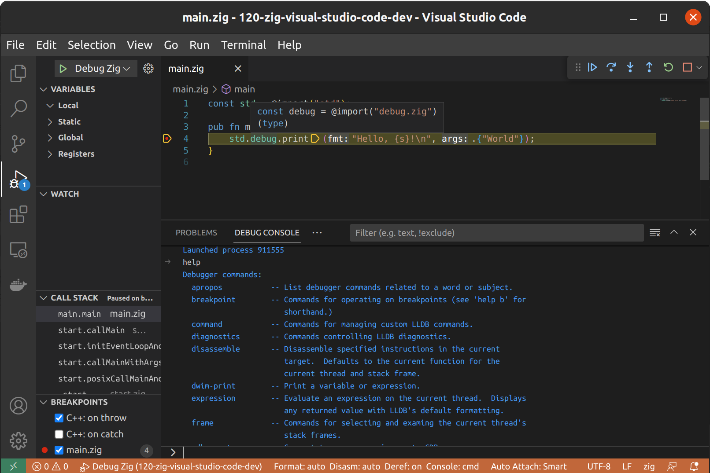

¡Saludos, entusiastas de Zig! 👋 Es el momento de configurar un entorno de desarrollo cómodo para mejorar tu experiencia de programación en Zig. En esta publicación, te guiaré para configurar Visual Studio Code (VS Code) para el desarrollo en Zig, incluyendo edición de código, ejecución y depuración. ¡Sumérgete en el tema! 🚀
⚠️ ¡Atención, programador! Este blog ha sido creado utilizando la versión dev 0.11.0 de Zig. Ten en cuenta que los ejemplos proporcionados aquí podrían no funcionar como se espera si estás utilizando una versión diferente de Zig. ¡Comprueba siempre tu versión de Zig!
1$ zig versionOutput
10.11.0-dev.3191+fd213accb
Configurando Visual Studio Code para el desarrollo en Zig 🛠️
Para configurar VS Code para el desarrollo en Zig, sigue estos pasos:
-
Instala Visual Studio Code: Si aún no lo has hecho, descarga e instala Visual Studio Code para tu plataforma (Linux, Windows o macOS).
-
Instala la extensión de Zig: Abre el buscador rápido de VS Code (Ctrl+P), pega el siguiente comando y presiona enter.
|
|
- Configura los ajustes: Para configurar los ajustes de la extensión de Zig, abre el editor de Configuración haciendo clic en el ícono de engranaje en la esquina inferior izquierda de la ventana y selecciona “Configuración”. Busca “Zig” en la barra de búsqueda y actualiza los ajustes según sea necesario. Por ejemplo, es posible que desees establecer la ruta del compilador de Zig si no está en la ubicación predeterminada.
¡Listo! Ahora estás listo para desarrollar en Zig en VS Code. 🎉
Ejecutando y depurando código Zig en VS Code 🏃♀️💻
Para ejecutar y depurar código Zig en VS Code, sigue estos pasos:
-
Crea un nuevo archivo Zig: Abre VS Code y crea un nuevo archivo con la extensión
.zig, comomain.zig. -
Escribe código Zig: Escribe un programa sencillo en Zig en tu nuevo archivo, como un programa “Hola, mundo”:
|
|
- Configura tasks.json: Para ejecutar tu código Zig, necesitas crear un archivo
tasks.jsonen la carpeta.vscodede tu espacio de trabajo. Agrega la siguiente configuración al archivo:
|
|
- Ejecuta tu código Zig: Presiona
Ctrl+Shift+B(oCmd+Shift+Ben macOS) para ejecutar la tarea “zig build”, que compila tu código Zig. Luego, presionaCtrl+Shift+P(oCmd+Shift+Pen macOS), busca “Run Task” y selecciona “zig run” para ejecutar tu código Zig compilado.
Salida:
|
|
- Depuración: Para depurar tu código Zig, primero debes instalar las extensiones “Native Debug” de WebFreak y “CodeLLDB” de Vadim Chugunov.
Presiona ctrl-p (cmd+p en macOS) y ejecuta los siguientes comandos:
|
|
y
|
|
Una vez instaladas, crea un archivo launch.json en la carpeta .vscode de tu espacio de trabajo con la siguiente configuración:
|
|
- Depura tu código Zig: Establece puntos de interrupción en tu código Zig haciendo clic en el margen izquierdo junto a los números de línea. Presiona
F5para iniciar la depuración. El depurador se detendrá en tus puntos de interrupción, lo que te permitirá inspeccionar variables, avanzar paso a paso en tu código y utilizar otras funciones de depuración.

¡Eso es todo! Ahora has configurado Visual Studio Code para el desarrollo en Zig, incluyendo la ejecución, asistencia y depuración de tu código. 🎉
¿Qué sigue? 🌟
Con tu flamante entorno de desarrollo Zig, estás listo para explorar temas avanzados de Zig y crear proyectos asombrosos. ¡Mantente atento a más publicaciones en el blog sobre conceptos avanzados de Zig!
¡Sigamos explorando el mundo de Zig juntos! 👩💻👨💻🎨